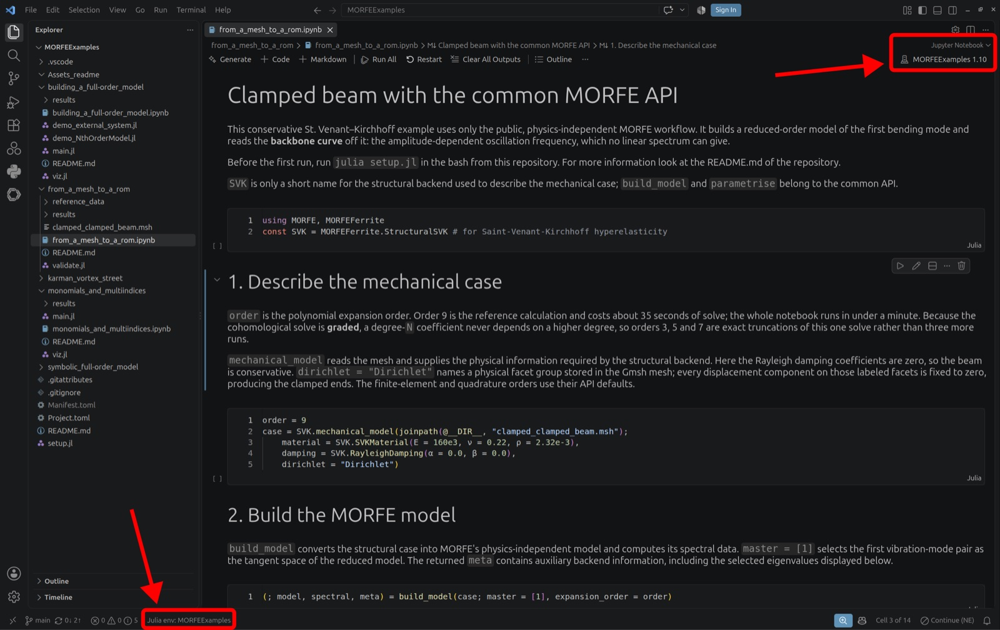

Install MORFE.jl
Install Julia, add MORFE from the package registry, and verify that it loads.
Standard installation
Install Julia 1.10 or later. For anything to do with installing or running Julia itself, see the Julia documentation. Then run:
using Pkg
Pkg.add("MORFE")
using MORFE
Development version
To install the latest development version from GitHub instead of the registered release, run:
using Pkg Pkg.add(url = "https://github.com/MORFEproject/MORFE.jl.git")
FEM tutorials
The structural and fluid tutorials also use the unregistered MORFEFerrite backend:
using Pkg Pkg.add(url = "https://github.com/MORFEproject/MORFEFerrite.jl.git")
Run the example notebooks
The runnable notebooks are not part of this package: they live in MORFEExamples, where all five tutorials share one Julia environment and one Jupyter kernel. Clone it and run the setup script once from the repository root:
git clone https://github.com/MORFEproject/MORFEExamples.git cd MORFEExamples julia setup.jl
setup.jl activates the repository's own environment, installs MORFE and
MORFEFerrite from their GitHub main branches (the notebooks use post-processing functions the
registered release does not carry yet) together with IJulia, CairoMakie, Symbolics and the
rest, and registers a Jupyter kernel named MORFEExamples pointing at that
environment. It only needs to run
once; the generated Manifest.toml stays local to your machine.
Then open any notebook and select the MORFEExamples kernel. The notebooks are
committed with their outputs cleared, so running one is the first step.

Install Julia
and VS Code,
then add the Julia extension from JuliaLang. On Windows, check that
Julia: Executable Path in the extension settings points at the Julia executable on
your C: drive. Open the MORFEExamples folder in VS Code, run
julia setup.jl in its terminal, then open a notebook and pick the
MORFEExamples kernel.
Once MORFE is installed, choose a tutorial from the tutorial hub.